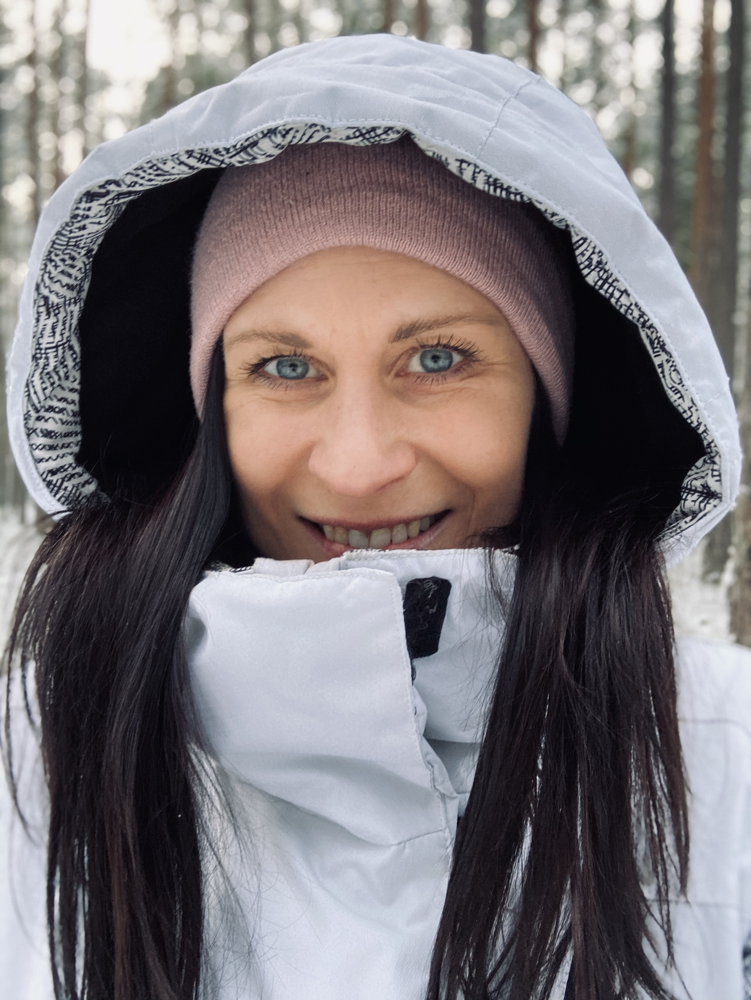
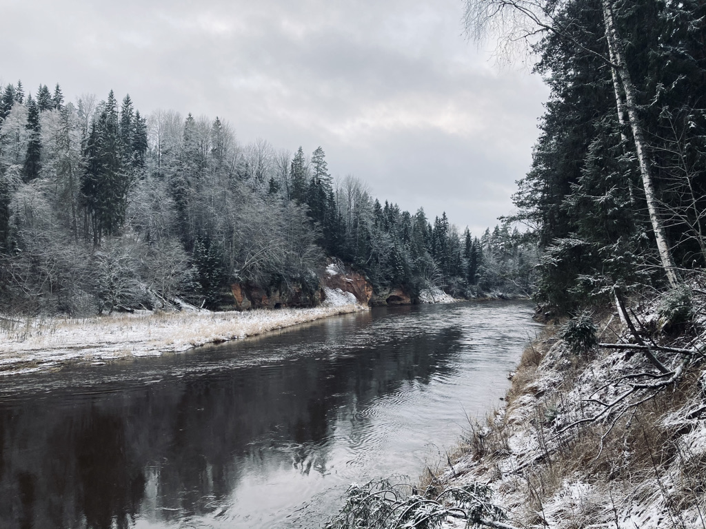
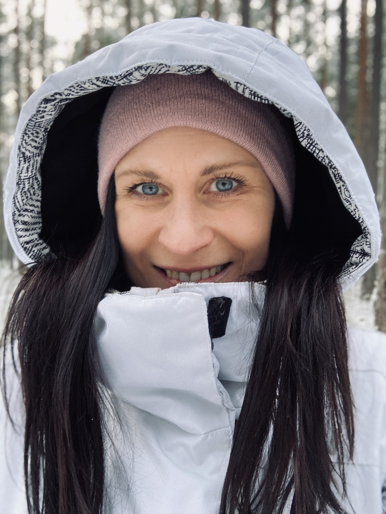
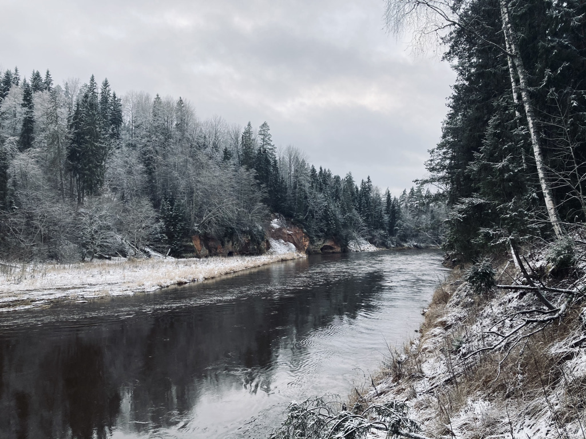
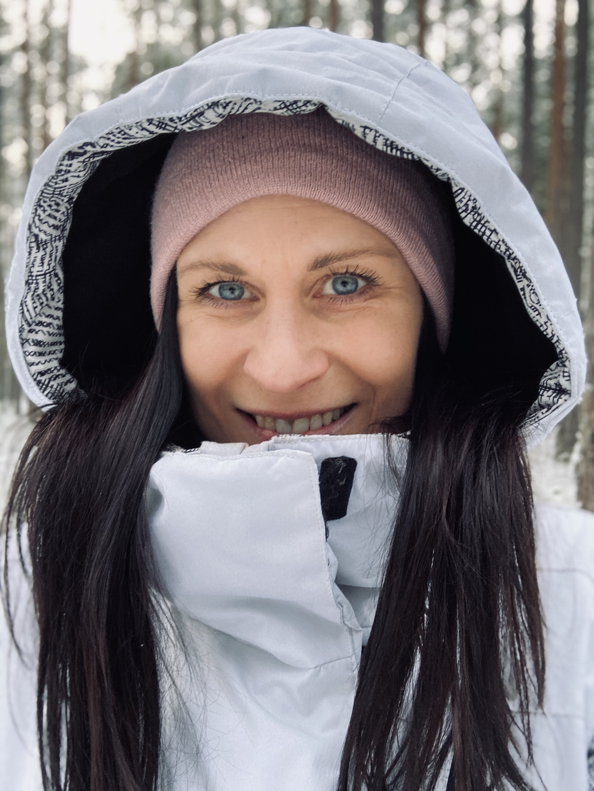
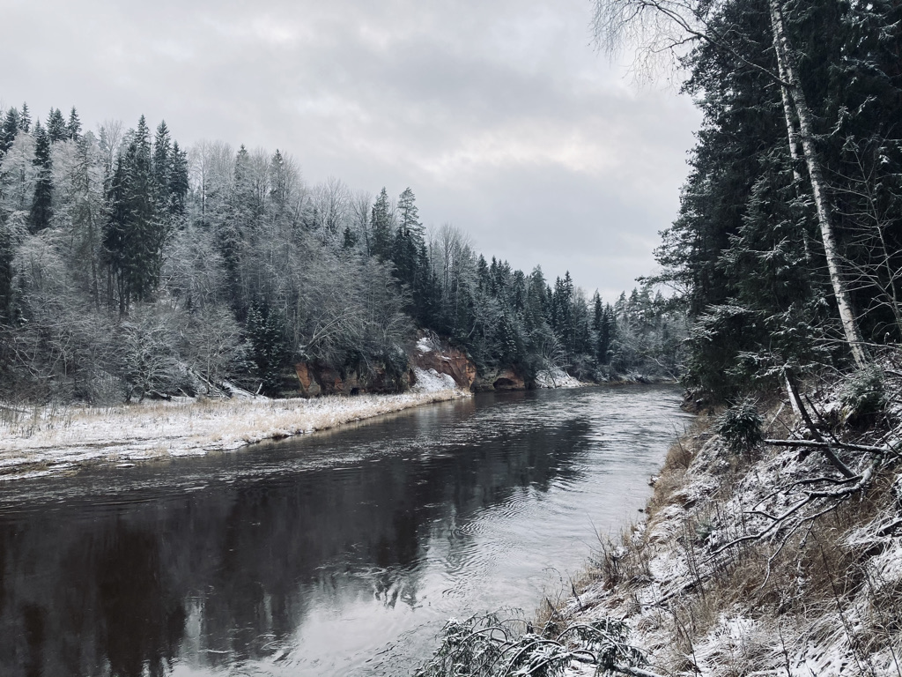
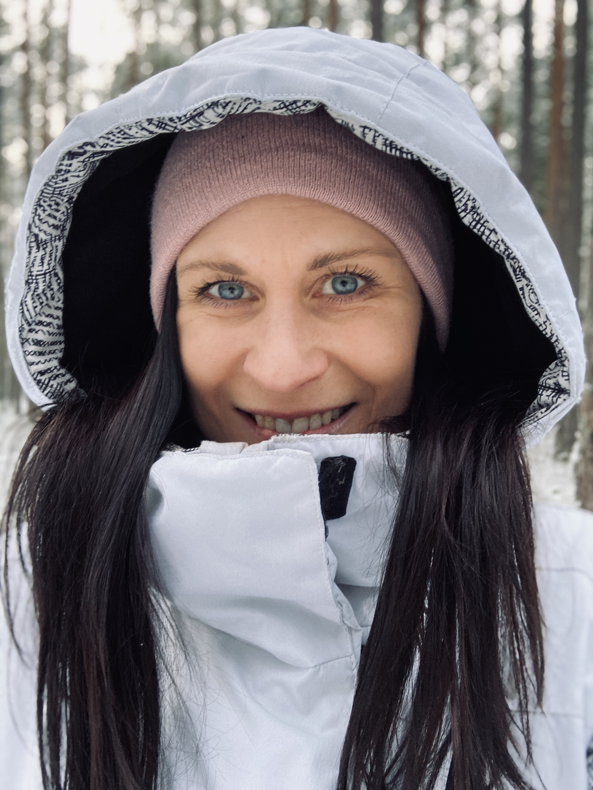
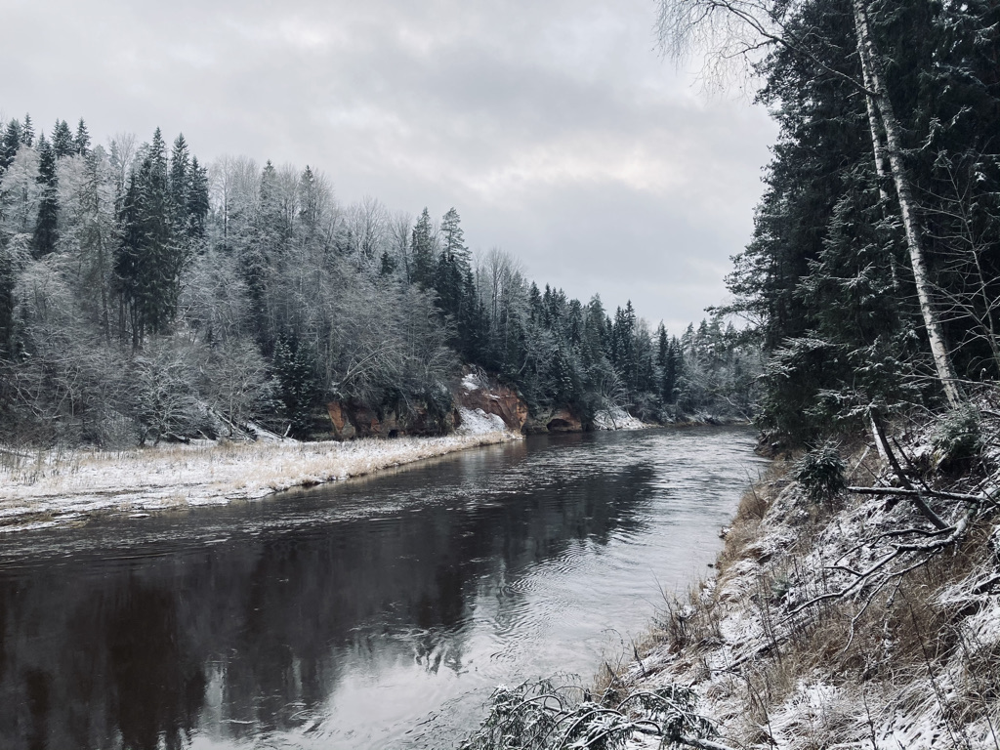

Mārketings un tirdzniecība
2017.g. - 2021.g.
Ekonomikas un vadības fakultāte
Finanšu menedžments
2003.g. - 2011.g.
IKVD īstenotajā projektā PUMPURS (Eiropas Sociālā fonda projektu Nr. 8.3.4.0/16/I/001 “Atbalsts priekšlaicīgas mācību pārtraukšanas samazināšanai”)
VIAA darbības mērķis ir īstenot valsts politiku izglītības, zinātnes un inovāciju jomā un nodrošināt Izglītības un zinātnes ministrijas atbildībā esošo valsts, Eiropas Savienības (ES) politiku un ārvalstu finanšu palīdzības instrumentu programmu, projektu un iniciatīvu īstenošanu un uzraudzību.
2015.g. - 2017.g.
2006.g. - 2015.g.
Datorprasmes: MS Office (Word, Excel, PowerPoint, Outlook), MAC OS.
B kategorijas autovadītāja apliecība (no 2009.gada)
Atvērta, komunikabla, sabiedriska, uz panākumiem orientēta, ar augstu atbildības sajūtu